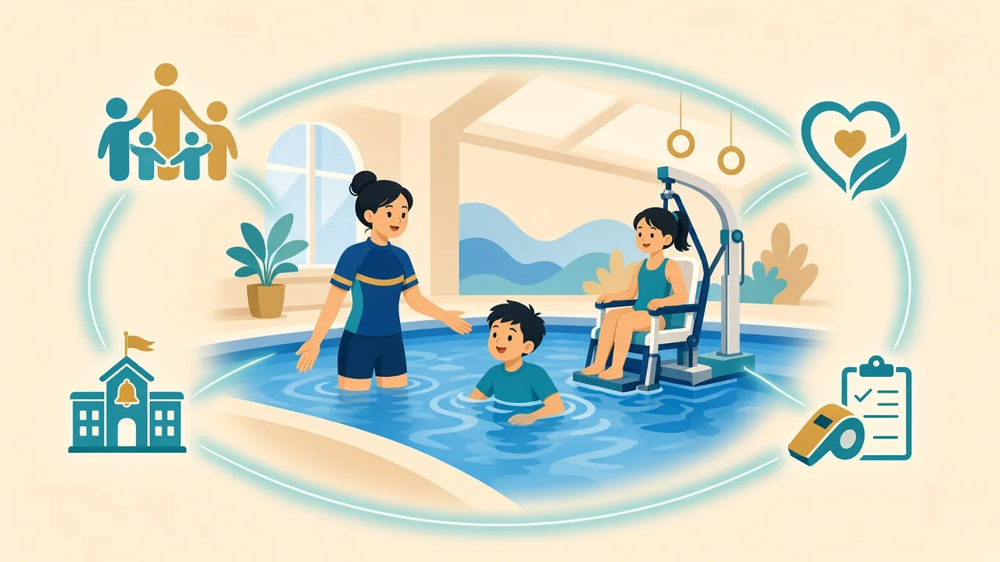

家長入門：概念層面的認識，方便與學校、服務及游泳課溝通

特殊教育需要泛指孩子在學習、溝通、感官、肢體或行為情緒上，需要額外或個別化支援，才能更公平地參與日常學習與活動。常見類別包括：自閉症譜系、專注力不足／過度活躍症（ADHD）、讀寫障礙、肢體／視覺／聽力障礙、智力障礙、唐氏綜合症等。同一標籤下，每位孩子的能力與需要仍可以差別很大。
社會對特殊需要的理解亦在轉變：早期標籤式稱呼容易帶來偏見，現今更強調去污名化與尊重個體差異，並受《聯合國殘疾人權利公約》等理念影響——每位孩子都有平等參與學習與社區生活的權利。

以上屬公開資訊層面的整理，實際資格與申請以相關部門／機構最新指引為準。
游泳不是取代醫療或學校支援，而是補足身體活動、安全感與生活技能的一環。新天地會請家長簡述：孩子已有的評估重點、學校或治療師的建議、泳池環境的敏感點（聲音、觸覺、水深）。課堂上我們會用可預期流程、分步目標與安全守則，讓水中學習與日常生活節奏互相配合。
溫馨提示：本頁為家長教育整理，供認識特殊需要與游泳教學方向參考，並非醫療診斷或治療建議。孩子個別安排請 WhatsApp 與教練商討。
可以。我們重視孩子在水中的實際需要多於標籤。若家長觀察到感官敏感、專注短暫或溝通節奏不同，歡迎先 WhatsApp 描述情況，我們會建議合適的起步方式。
我們可按家庭時間商量班別；亦鼓勵家長把學校與治療師的建議告訴教練，方便統一「小步驟」目標，避免孩子同時面對太多新要求。
每位孩子節奏不同。游泳課的目標是安全、自信與可持續的進步，而不是與他人比較「何時康復」。把小進步寫下來，往往比焦慮「何時正常」更有幫助。
延伸閱讀：特殊需要游泳運動發展 · 認識特殊需要總覽 · 家長資源